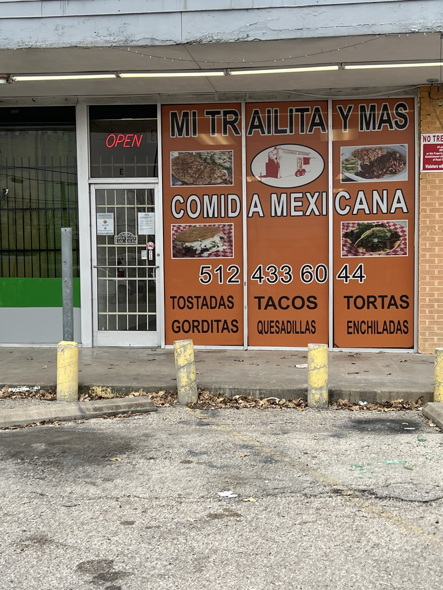

Nuestra historia / Our story
The little trailer that got a front door
Mi Trailita means "my little trailer." In 2011, David Salinas and his mom, Maria, started feeding Windsor Park from an orange taco trailer on Manor Road. In January 2022 they opened this dine-in spot half a mile up the street, and the trailer now lives on, painted big across our dining room wall.
Same family, same food: tortillas made by hand, salsa made fresh, and plates that leave you full. Breakfast tacos on the way to work, mole enchiladas at lunch, tacos and a horchata at night.
"From a food trailer to a dine-in location. A dream come true for a mother and son duo that's been serving the Windsor Park area for over 10 years."Mi Trailita Y Mas
Est. 2011Mother & sonHand-made tortillasBreakfast all day